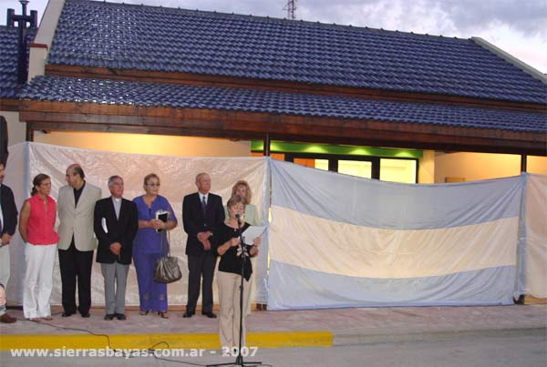

En marzo de 1948 aparece el primer registro de pago por alquiler (en las instalaciones donde actualmente funciona una farmacia)
Años mas tarde la biblioteca pasa a la casa de piedra propiedad de la Flia Piatti, entre los años 1954 y 1955, es trasladada a la Cia Argentina de cementos Pórtland. Luego por el 1982 y 1983 se traslada al instituto Privado Sierras Bayas.
En 1998 movilizo y se reabre nuevamente al publico en las instalaciones de Coopelectric (el espacio es cedido en calidad de comodato). Durante los siguientes años a través de los subsidios de CONABIP y con la ayuda del municipio de Olavarría, y donaciones de las canteras cercanas al pueblo, el 25 de mayo del 2007 se traslada frente a la plaza del central donde hasta el día de la fecha sigue ofreciendo sus servicios.
